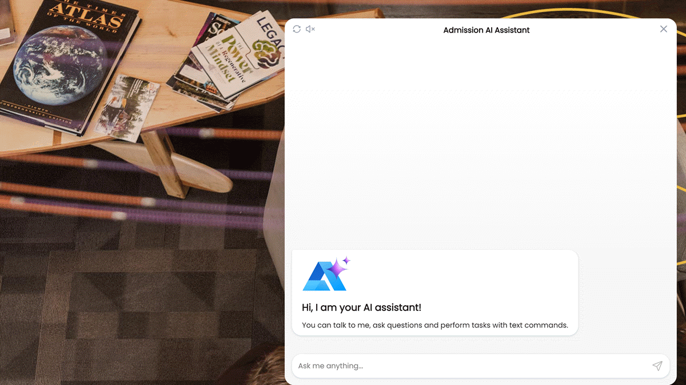

Add a greeting to the AI chat¶
To enhance and streamline the user experience, you can use various UI widgets in the Alan AI Chat, such as cards, popups and buttons.
In this tutorial, we will add a greeting card to the Alan AI Chat that will be displayed every time the user opens the chat and starts a new dialog session.
What you will learn¶
How to greet users in the AI chat
How to use UI widgets in the AI chat
What you will need¶
To go through this tutorial, make sure you have completed the following tutorial: Create an AI chat for a website.
Step 1. Add a greeting to the dialog script¶
To the dialog script in your project, add the following code:
onCreateUser(p => {
const greetingImage = "https://storage.googleapis.com/alan-public-images/alan-webflow-website/alan-chat-logo.svg";
const greetingTitle = "Hi, I am your AI assistant!";
const greetingText = "You can talk to me, ask questions and perform tasks with text commands.";
const img = `<img style="display: block;margin-bottom: 20px; height:75px" src="${greetingImage}"/>`;
const title = `<div style="margin-bottom: 10px;font-weight: 700;font-size: 20px;">${greetingTitle}</div>`;
p.play(`${img}${title}${greetingText}`, opts({ force: true, markdown: true, audio: false, greeting: true}));
});
Now, when you open the Alan AI Chat, a greeting will pop up:
Step 2. Customize the greeting¶
Let’s change the greeting to match the look and feel of the webpage to which the Alan AI Chat is embedded. You can create your own greeting card or update the greeting template shown above by using markdown or HTML formatting and CSS styles.
To update the greeting template:
In the
greetingImagevariable, specify the link of the image to be displayedIn the
greetingTitlevariable, specify the greeting headingIn the
greetingTextvariable, specify the main text for the greetingIn the
imgvariable, specify CSS styles for the imageIn the
titlevariable, specify CSS styles for the greeting title
Note
If you enable audio output for the Alan AI Chat, make sure you set the audio:false option in the play() function to prevent Alan AI from playing special characters used in the greeting message. For details, see Specifying play options.
onCreateUser(p => {
const greetingImage = "https://img.freepik.com/premium-vector/education-badge-logo-design-university-high-school-emblem-vector-logo-template_441059-534.jpg?w=2000";
const greetingTitle = "Welcome to Our University!";
const greetingText = "I am your Admission AI Assistant! Feel free to ask me any questions regarding: \n - Admission process \n - Scholarships \n - Student life";
const img = `<img style="display: block;margin-bottom: 20px; height:150px" src="${greetingImage}"/>`;
const title = `<div style="margin-bottom: 10px;font-weight: 700;font-size: 20px;">${greetingTitle}</div>`;
p.play(`${img}${title}${greetingText}`, opts({ force: true, markdown: true, audio: false, greeting: true}));
});